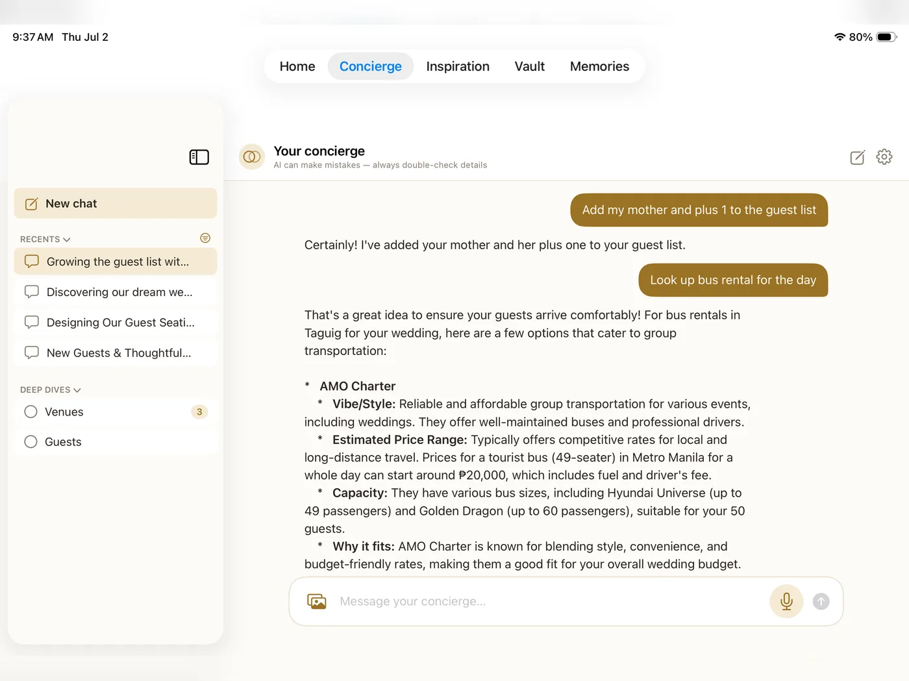
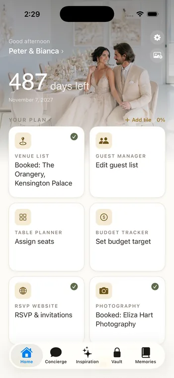

Wedding Concierge
An iOS/macOS wedding-planning concierge — not a bare chatbot. The LLM is one piece of a system that also handles sync, credentials, and grounding.


Grounded, not generative
Venue and vendor picks come from Apple MapKit and Google Places, so the assistant reasons over real search results instead of inventing addresses. The model and the UI also share one state model by design — a known failure mode in AI apps is the assistant's understanding drifting from what's on screen, and that's specifically what this was built to prevent.
No key in the binary
Cloud calls go through a stateless relay hosted on Vercel, which holds the API key and enforces rate limits server-side — nothing in the client can leak a credential. An earlier build ran inference on-device via MLX (Llama 3.2 3B, then Qwen 2.5 3B); that path was later pulled, and the app currently runs a single hardcoded cloud preset (Gemini Flash) with no on-device fallback.
Local-first, minimal data
SwiftData plus CloudKit keeps plans in sync across iOS and macOS without a backend database. No user tracking; sensitive profile data stays on-device. Live on iPhone, iPad, and Mac as of August 7, 2026.